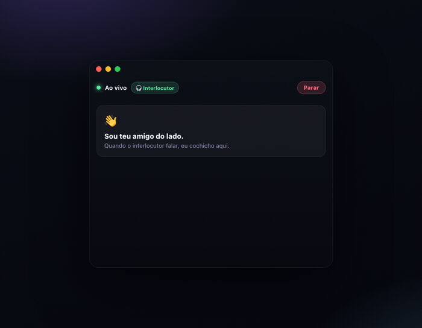
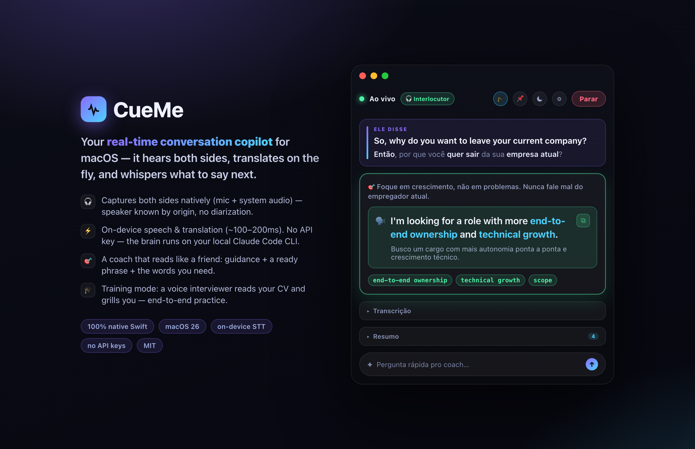

CueMe is a personal second brain for macOS. Write, journal and record into user-owned Markdown — then retrieve your real experience while life is still happening.

Start a Note, journal entry, voice thought or two-sided conversation from the same home.
Projects and Notes are normal folders. Audio and attachments live beside canonical note.md files.
FTS5, local embeddings and sqlite-vec index the files without replacing them as truth.
Opt in to giving the live Coach a small, relevant snapshot of your actual past experience.
"He asked X → answer like this." Guidance in your language, a ready phrase in theirs, plus the vocabulary you need.
A spacious Markdown editor, typographic reading mode and adaptive light/dark appearance make memory pleasant to consume.
Every Project and Note is a portable filesystem folder with frontmatter, attachments and recordings you control.
Labels, Projects and hybrid semantic search connect written thoughts, voice notes, meetings and decisions over time.
Every line the other person says, translated instantly with the key words bolded for fast scanning.
Paste or import your résumé; the coach points at your real stories instead of making things up.
A built-in interviewer reads your CV and grills you out loud, adapting to your answers — end-to-end practice.
Files, search, speech, translation and embeddings stay local by default. Personal memory reaches a Coach provider only when enabled.
⌥Space to show/hide, a menu-bar control, pin-on-top. It sits beside the call, not in front of it.
Turn on training mode and CueMe becomes its own interviewer: it speaks questions aloud from your brief and résumé, listens to your spoken answers, and asks natural follow-ups. It's a full end-to-end exercise of the real pipeline — no external app, no API key.

Requires macOS 26, Xcode 26, and the Claude Code CLI logged in for the keyless default brain. DeepSeek is optional.